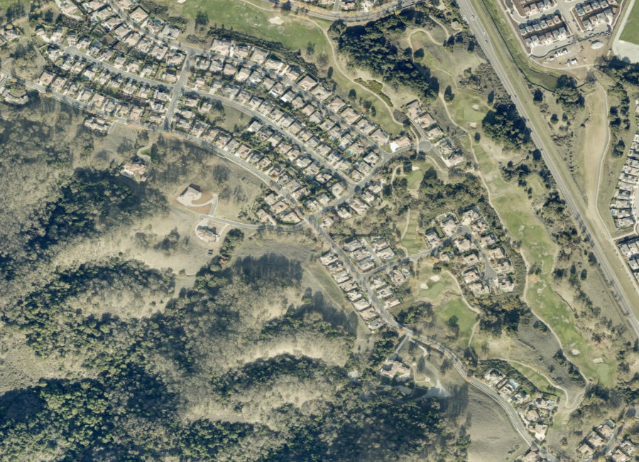
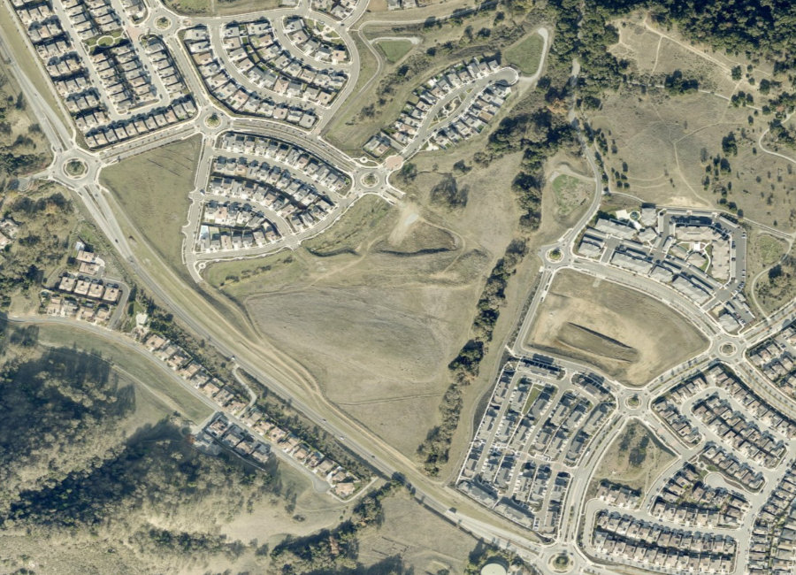
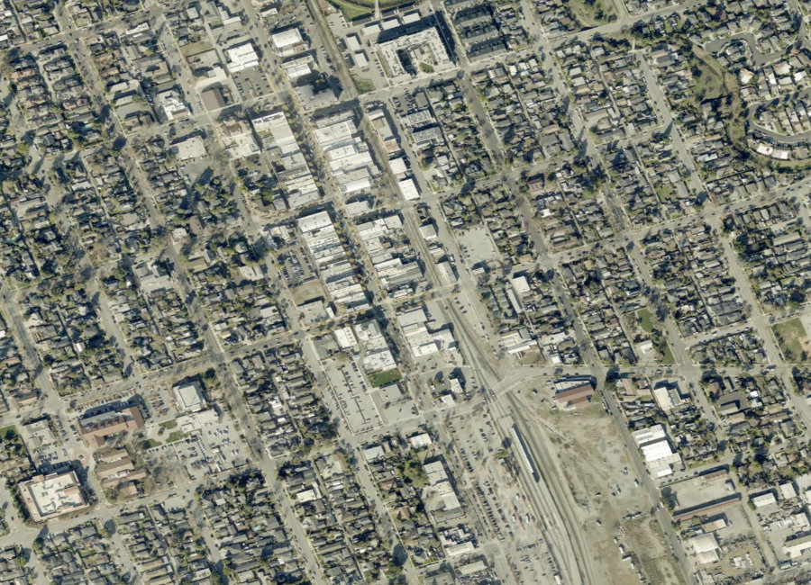
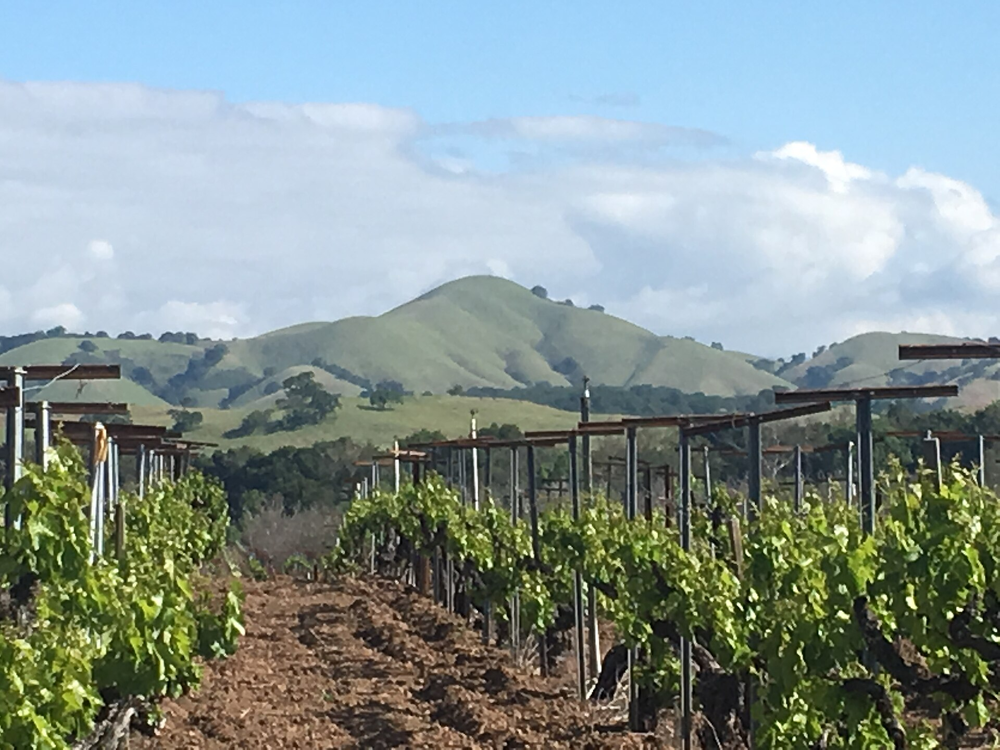

Santa Clara County · South Valley
Known worldwide as the "Garlic Capital of the World," Gilroy has quietly become one of Silicon Valley's last realistic entry points — a genuine city with its own downtown, wineries, and master-planned communities, at a real discount to San Jose thirty miles north. Below you'll find current homes for sale and real estate listings in Gilroy, updated throughout the day, whether you're buying your first South Valley home or preparing to sell into today's market.
If you'd like more information on any of these Gilroy listings, just reach out — we're happy to share disclosures, recent nearby sales, and pricing history, and to walk you through anything you're curious about.
And for your convenience, feel free to register for a free account to receive alerts whenever new Gilroy listings hit the market that match your criteria.
Source: Compass Market Insights, single-family homes in Gilroy, July 2026 — 37 closed sales. Updated 20 August 2026. Gated communities like Eagle Ridge routinely sell 30%+ above the citywide median.
About the Community
Gilroy incorporated in 1870 and grew as an agricultural center known for vineyards, orchards, and above all, garlic — a legacy still celebrated at the annual Gilroy Garlic Festival, which draws hundreds of thousands of visitors. Today it functions as a commuter city for Silicon Valley workers who want a relaxed pace, real neighborhoods, and meaningfully lower prices than cities just north.
Why People Love It Here
Explore the Area

Gated, golf course community

Master-planned, newer construction

Historic core, Craftsman bungalows

Wine country, larger lots
Schools
Gilroy is served by the Gilroy Unified School District, alongside respected private and parochial options.
History
Gilroy began as the village of San Ysidro, granted to rancher Ygnacio Ortega in 1809. His daughter Clara married John Gilroy — a Scotsman who'd become a Mexican citizen as Juan Bautista Gilroy to own land — and the couple developed much of the surrounding area. The town incorporated in 1870, taking his name.
Agriculture, and garlic specifically, defined Gilroy's economy for over a century, a legacy the city still celebrates through its internationally known Garlic Festival. In recent decades, residential development has expanded into the foothills and southern valley, with the Gilroy Premium Outlets and steady Silicon Valley commuter demand reshaping the local economy.
The Chen Team in Gilroy
We've helped families buy and sell across Gilroy's most sought-after streets. When you work with us, you get second-generation local knowledge and Compass's full resources.
// Replace with your verified production figures
Market Trends
Quarterly median sold price, single-family homes. Bars are drawn to scale from zero. Year-over-year compares Q2 2026 (120 closed sales) with Q2 2025 (91). Connect to live market data. Hover a bar for the exact figure.
Available Now
Image credits: View of Lions Peak near Gilroy CA, April 2018.jpg by Wahn — CC BY-SA 4.0, via Wikimedia Commons.
{kind=link}